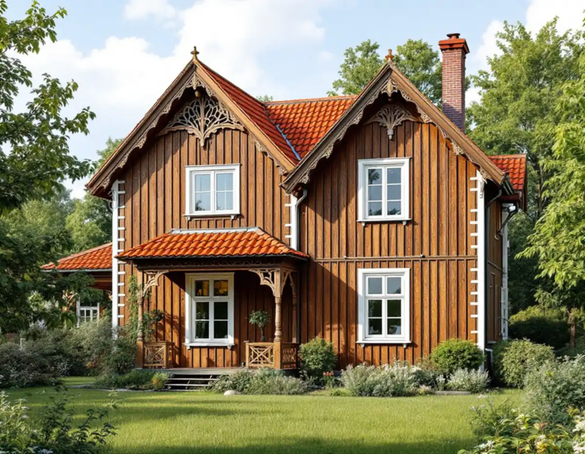
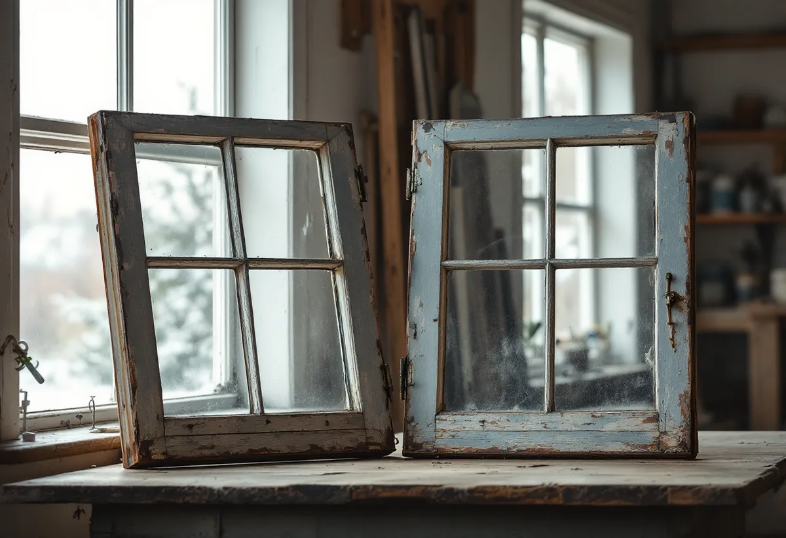
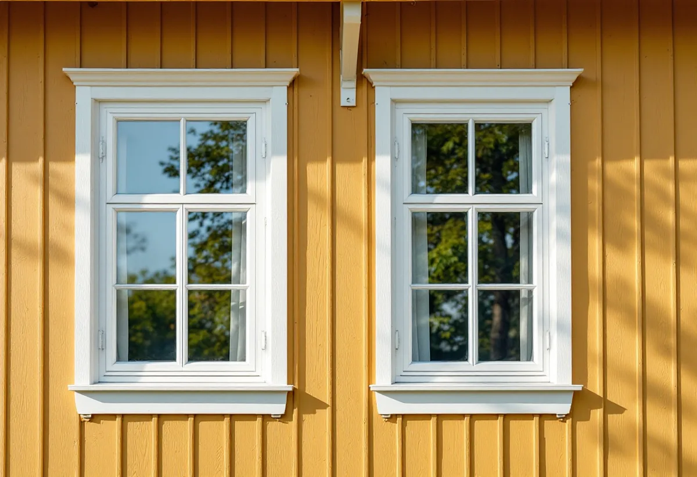

Platsbesök
Gratis genomgång av bågar, karmar och beslag.
I Duvbo kräver det bygglov att byta ut ett fönster, och stadens miljöprogram säger att husens tidstypiska uttryck inte får förvanskas. För många villaägare är renovering därför det naturliga valet. Geal Entreprenad AB renoverar fönster i Duvbo och övriga Sundbyberg så att de gamla bågarna fungerar och håller tätt igen.

Sundbybergs miljöprogram för Duvbo berättar att föreningen Egna Hem bildades i Stockholm 1898 för att skapa egna hem för arbetare. Året därpå köpte föreningen egendomen Dufvebol i Spånga församling och gjorde en stadsplan med 325 tomter. Duvbo växte snabbt fram som en av landets första egnahemsmiljöer, och 1924 utökades området västerut med ytterligare 98 villatomter.
Riksantikvarieämbetet pekade 1987 ut Duvbo som riksintresse för kulturmiljövården, med motiveringen att det är ett av de första exemplen på en välorganiserad egnahemsförstad i Stockholmstrakten. Programmet betonar att det i första hand är samhället som helhet som är värdefullt, inte de enskilda husen.

I samband med en planändring utökades bygglovsplikten i Duvbo. Enligt miljöprogrammet omfattar den bland annat utbyte av fasadbeklädnad och takmaterial, omfärgning av fasaden och utbyte, flyttning eller igensättning av fönster och dörrar. Åtgärder inom den utökade lovplikten är kostnadsfria att söka lov för.
Programmet ger också rådet att byggnadens tidstypiska uttryck inte får förvanskas genom ändringar som byte av fönster, fasad- och takmaterial eller färgsättning, och att material och utförande vid underhåll om möjligt ska följa originalet. Det ger också rådet att äldre hus som förändrats kraftigt om möjligt anpassas bättre till omgivningen i samband med andra åtgärder. En renovering som behåller bågarna ändrar inget av detta. Ska fönstren ändå bytas finns fönsterbyte i Sundbyberg.
Husen i Duvbo byggdes enligt programmet framför allt vid sekelskiftet 1900 och under 1920-talet, med en senare grupp från 1930- och 40-talen. Sekelskiftesvillorna byggdes ofta av ägarna själva och visar en rik provkarta på tidens smakriktningar, med fasader indelade i fält av stående och liggande spontpanel och snickarglada detaljer. Både de äldre och de yngre husen står i två våningar på höga socklar. Riksantikvarieämbetets skrift om fönster berättar att kopplade fönsterbågar började införas mot slutet av 1800-talet; patentet på fönster med kopplade bågar beviljades 1889. Från sekelskiftet blev de kopplade, inåtgående bågarna allt vanligare.
I ett kopplat fönster hänger den yttre bågen på den inre, som därför ofta är kraftigare. Eftersom husen är så olika ser fönstren också olika ut från villa till villa. När vi renoverar tar vi isär bågparet, lagar och målar båda delarna och sätter ihop dem med beslagen justerade, så att paret sluter tätt mot karmen igen.
Miljöprogrammet beskriver att träfasaderna i Duvbo ursprungligen målades med linoljefärg eller slamfärg i tidstypiska jordnära kulörer, och att 1930- och 40-talshusen är slätputsade och avfärgade i ljusa kulörer. Programmet uppmanar husägare att kontakta stadens plan- och byggförvaltning för färgförslag.
Riksantikvarieämbetet beskriver linoljefärg som en färg där bara linolja är bindemedel, med goda vätningsegenskaper. Vi målar fönstren med linoljefärg i den kulör huset har, och omfärgning av fasaden är inget som ingår i en fönsterrenovering. Mer om tjänsten finns under fönsterbyte och fönsterrenovering.

Gratis genomgång av bågar, karmar och beslag.
Vi kontrollerar om huset ligger i Duvbo.
Kopplade bågar tas isär och märks.
Skrapning, nytt trä och omkittning.
Linoljefärg i husets befintliga kulör.
Justering, tätning och genomgång.
Skatteverket räknar reparation av fönster och målning av fönster i småhus som rotarbete. Avdraget gäller bara arbetad tid på plats hos dig, inte arbete i en verkstad. Bor du i en bostadsrätt gäller det bara arbete på insidan av fönstren.
Avdraget är högst 30 procent av arbetskostnaden och högst 50 000 kronor per person och år. Material och resor ger inget avdrag, och Geal drar avdraget direkt på fakturan.
Antal kopplade bågar, skadornas omfattning, mängden kitt och färg som ska bort, nytt trä, beslag och tätning och om arbetet görs på plats. Efter ett gratis platsbesök får du ett skriftligt kostnadsförslag.
Byta eller renovera fönster.
Fönsterbyte i Stockholm →Takbyte, takbesiktning och plåtarbeten.
Takläggare i Sundbyberg →Rött lertegel och synliga taktassar i Duvbo.
Takrenovering i Sundbyberg →Duvbo, potten och medgivandena.
Attefallshus i Sundbyberg →Ventilationen, OVK och Duvbo.
Badrumsrenovering i Sundbyberg →Nytt hus, träd och regler i Duvbo.
Byggföretag i Sundbyberg →Puts och kulör i stadskärnan.
Fasadmålning i Sundbyberg →Panel och puts på Duvbos villor.
Fasadrenovering i Sundbyberg →Duvbo, flerbostadshusen och lovet.
Fönsterbyte i Sundbyberg →Trägolv i äldre villor och nya golv.
Golvläggare i Sundbyberg →Ta bort färg och fernissa från gamla golv.
Golvslipning i Sundbyberg →Duvbos villor och stadens lägenhetskök.
Köksrenovering i Sundbyberg →Lamellhus, kulörbyte och bostadsrätt.
Målare i Sundbyberg →Duvbos tak, rännor och lov.
Plåtslagare i Sundbyberg →Altan, pergola och staket enligt stadens guide.
Snickare i Sundbyberg →Container, ställning och grannar.
Takbyte i Sundbyberg →Ny tapet i äldre lägenheter.
Tapetsering i Sundbyberg →Duvbo, träden och riktlinjerna.
Tillbyggnad i Sundbyberg →Duvbos villor, kaminer och etablering.
Totalrenovering i Sundbyberg →